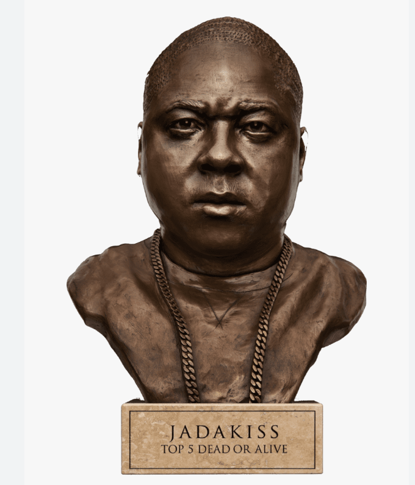

Olivier Copiel is a comic book artist that I admire. I really like the way he combines realism with traditional comic book art visuals.
copiel
Jadakiss is a New York based rapper I admire. I like his consistency as a rapper and his story telling ability.
Khary Randolph is a comic book artist that is a source inspiration for me. I really enjoy the way he uses angles in his character designs it gives a sense of movement that fit well in comic books.